Luis Arturo González Salas
M.Sc. in Robotics Engineering
I design, build, and program physical systems. I recently completed a double degree Master in Advanced Robotics in Japan and France. I have experience combining hardware, sensors, and control algorithms to solve real problems.
Education
Double degree master and bachelor studies across Japan, France, and Mexico.
Academic Projects
Robotic manipulation, automation lines, and computer vision systems.
Software Code
Personal repositories with clean and structured algorithms.
Education and Main Achievements
Academic Background
M.Sc. in Science & Engineering
Keio University (Tokyo, Japan) | 2024 - 2025
Part of the JEMARO Double Degree program. Focused on micro-robotics and control systems.
M.Sc. in Advanced Robotics
Ecole Centrale de Nantes (France) | 2023 - 2024
First year of the JEMARO Double Degree. Focused on kinematics, dynamics, and medical robotics.
B.Sc. in Mechatronics Engineering
Tecnológico de Monterrey (Mexico) | 2019 - 2023
Minor in Cyber-physical Systems.
GPA: 92.7 / 100
Honors and Awards
Erasmus Mundus Scholarship
Awarded for master studies in the JEMARO program (2023).
Full Coverage Scholarship
Awarded full tuition for bachelor studies (2019).
Olympiad of Informatics Medals
Silver medal at the National Mexican Olympiad (2018) and Gold medal at the State level (2016 to 2018).
CSWA SolidWorks Certification
Certified associate in mechanical design (2021).
COVID-19 Public Hospital Donation
Designed and produced 1800 mask protectors for medical staff (2020).
Academic Projects
This section highlights the physical systems I built during my master and bachelor degrees. They involve mechanical design, electronics integration, and control software. Click on any project to see the details and media.
Master Degree Projects

Micro-scale Particle Teleoperation
I designed a two axis haptic teleoperation system. This system allows a user to physically feel and control microparticles trapped by a laser. I integrated trap stiffness calibration with admittance control and reaction force observers.
View Details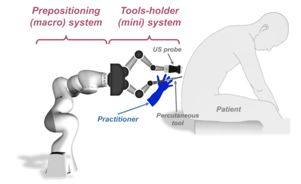
Medical Cobotic Assistant
I developed a simulation for the hand guidance of a macro micro redundant robot. The system was designed for medical applications to assist in percutaneous interventions using advanced torque and impedance control laws.
View DetailsBachelor Degree Projects
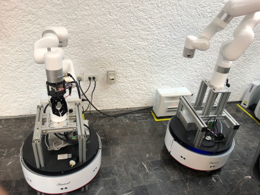
Automated Keychain Production Line
Automated a manufacturing plant using mobile robots, collaborative arms, and digital twin technology to create a self-regulating Industry 4.0 system for keychain production.
View Details
RC Car Manufacturing Cell
I programmed an automated cell to assemble remote controlled cars. I designed the PLC logic and coordinated the conveyor systems. I also created a digital twin using RobotStudio to simulate the process and detect collisions offline.
View DetailsPersonal Code Repositories
These are software projects I write to practice algorithms and learn new frameworks. Click on any repository to view the code structure, interface media, and technical details.
Collaborative Arm: Fruit Sorting Simulation
A complete ROS 2 and Gazebo simulation of a robotic arm. It uses stereo vision to detect red and green apples, and an inverse kinematics solver to pick and sort them. Includes a custom Tkinter GUI for manual and automated control.
Micro-scale Particle Manipulation Using Bilateral Control
Medical Cobotic Assistant
Automated Keychain Production Line
Project Highlights
Purpose
To achieve complete autonomy in a manufacturing line using cyber-physical systems.
Key Technologies
Computer Vision, Digital Twin, and Autonomous Navigation.
Project Overview
This project involved automating a manufacturing plant at Tecnológico de Monterrey to produce customized keychains with no human intervention. The goal was to integrate mobile robots, collaborative arms, and digital twin technology to create a self-regulating "Industry 4.0" system.
The process was designed to handle orders of at least 5 keychains, starting from an electronic tablet and ending with a finished product in under 30 minutes.
Project Pipeline
The system follows a synchronized sequence managed by Modbus communication and PLC logic:
- Material Retrieval: A Smart Mobile Robot travels to the Modula (vertical warehouse) to receive the raw material (acrylic pieces).
- Transport to UR Station: The mobile robot carries the fixture to the Universal Robot (UR) station for initial pressing.
- Conveyor Movement: The PLC S7-300 manages the conveyor to move the fixture through checkpoints.
- Assembly at YuMi: The mobile robot moves the fixture to the ABB YuMi station for gluing and final assembly steps.
- Unloading: The mobile robot places the finished keychain in a designated storage spot.
Note: The vision system was the "brain" of the operation, using colored circles on the fixtures to tell the robots exactly where to grab.
Hardware, Software, and Tools
| Category | Components Used |
|---|---|
| Robots | ABB YuMi (Collaborative), UR5 (Collaborative), 2 Smart Mobile Robots with xArm v5 arms. |
| Hardware | Jetson Nano, ZED 2 Stereo Camera, Lidar |
| PLC Systems | Siemens S7-1500 (Master/Client), S7-1200 (YuMi control), S7-300 (Conveyor/UR control). |
| Software | ROS (Robot Operating System), ABB RobotStudio, Process Simulate (Tecnomatix), SOLIDWORKS. |
| Vision/AI | OpenCV (Python), HSV Filters for circle detection, Regression models for predictive maintenance. |
| IoT/Data | PI Vision, PI System Explorer, Modbus TCP/IP protocols. |
| Machinery | Modula Warehouse, Laser Cutter, CNC EMCO Machine. |
Project Media Gallery
Custom Camera Mount Design
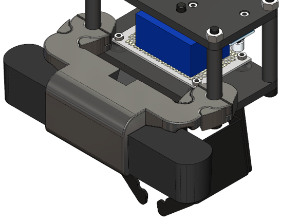
CAD of the custom mount for the ZED camera on the xArm gripper.
Computer Vision
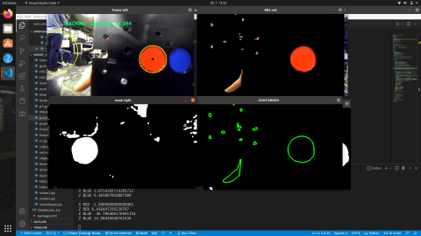
Visual representation of the HSV filters and circle detection algorithm.
Custom Fixture CAD
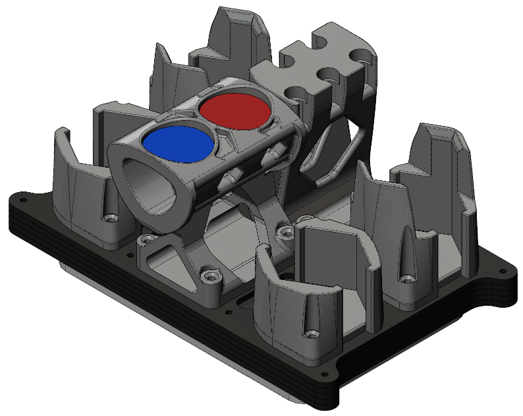
CAD models of the modular fixture used to hold the hexagonal acrylic pieces.
Fixture on Conveyor
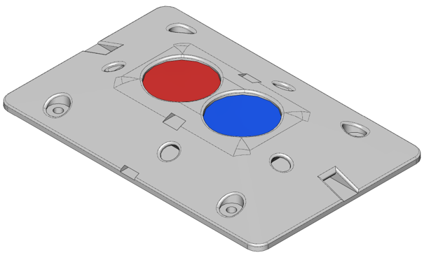
CAD models of the modular fixture interacting with the conveyor.
Robotic Gripper Pick
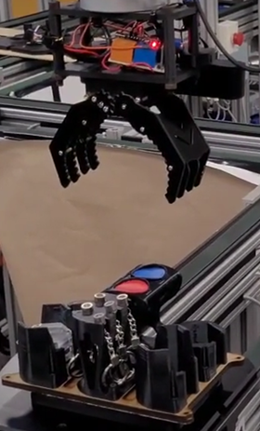
A real-world photo of the collaborative arm picking up the fixture handle.
Interface State Machine
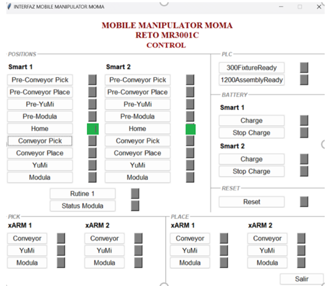
The Control Interface used to monitor the status of the mobile robots, stations and batteries.
Final Product Output
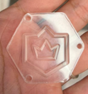
The final manufactured acrylic product with laser-cut edges and CNC-engraved crown emblem.
Mobile Robots Fleet
Photo of the two autonomous mobile robots used for logistics.
Automated Vertical Storage
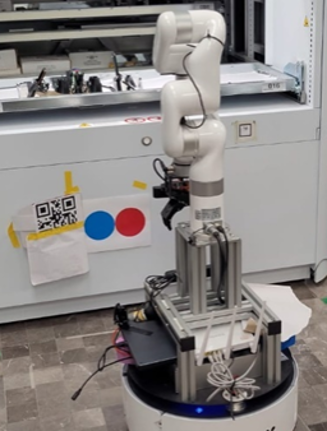
The mobile robot aligned with the Modula warehouse tray.
RobotStudio Digital Twin
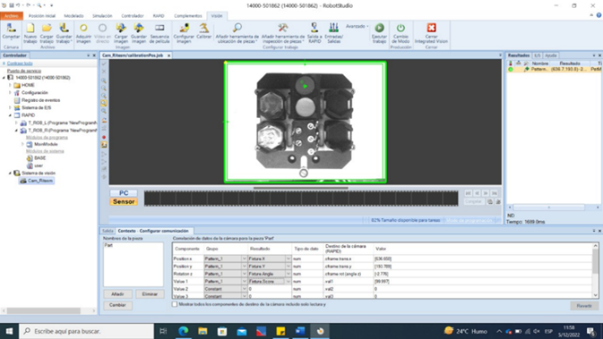
Screenshot of the ABB vision panel used to train patterns for the YuMi robot.
RViz Navigation
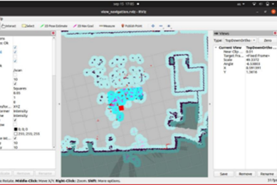
The ROS visualization tool showing the lab map and obstacles in real-time.
Tecnomatix Layout Simulation
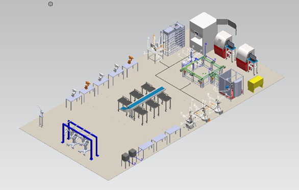
Screenshot of the Digital Twin simulation used to test the plant layout.
Tecnomatix Storage Simulation

Additional views of the Digital Twin optimizing storage layouts.
UR5 at Conveyor
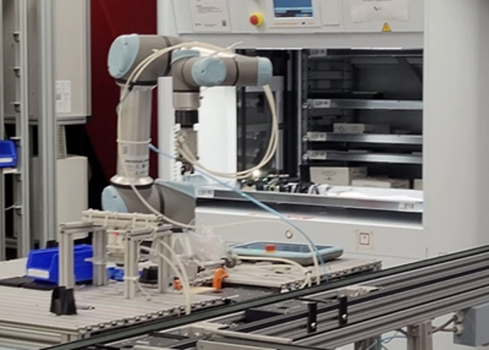
The UR robot interacting with materials at the conveyor station.
UR5 at Press Station
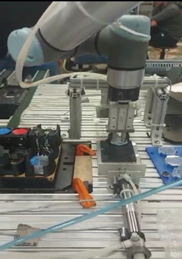
The UR robot pressing the acrylic components into the fixture.
RC Car Manufacturing Cell
This page is ready for you to add your specific project information. You can detail the PLC logic, conveyor control, and RobotStudio digital twin setup.
Collaborative Arm: Fruit Sorting
Technologies Used
Core Framework
ROS 2, ament_cmake
Languages
C++, Python 3
Simulation
Gazebo 11, RobotStatePublisher
Libraries
OpenCV, Orocos KDL, Tkinter
Project Overview
I built a complete ROS 2 and Gazebo simulation of a robotic arm to detect and sort red and green apples. The system is built on a modern robotics stack combining C++ for math and Python for high level logic. I used ROS 2 as the middleware to allow different nodes to communicate, and Gazebo for the physics simulation where the robot interacts with objects.

The custom control panel working together with the Gazebo environment and stereo vision cameras.
Robotics Fundamentals and Architecture
The vision detector script uses OpenCV to process the stereo camera feed. By comparing the pixel shift between the left and right lenses, the system calculates the depth distance to the apples. It uses a specific formula multiplying the focal length by the baseline and dividing by the pixel shift. Then, it uses the TF2 library to translate these camera coordinates into world coordinates so the robot base knows exactly where to reach.
For the arm movement, I wrote a C++ node that handles the kinematics. It uses the Orocos Kinematics and Dynamics Library to solve the inverse kinematics problem. If I want the robotic hand at a specific coordinate, the Levenberg Marquardt Algorithm calculates the exact angles for all six motors.
The entire process starts with a launch file that loads the robot into the Gazebo world. The vision node finds the apples and publishes their location. A custom Tkinter interface allows the user to select an apple. The target coordinates are sent to the inverse kinematics solver, which converts the 3D point into joint angles and sends them to the controller manager to execute the movement.
File Architecture
my_arm.urdf.xacro
Defines the physical structure, joints, and sensors of the robot. It acts as the skeleton.
fruit_sorting.world
Defines the environment, including the table and the apples. It acts as the simulation stage.
ik_solver_node.cpp
Solves the math for moving the arm to 3D points. It acts as the brain calculating the movements.
vision_detector.py
Detects red and green apples using color masks and calculates stereo depth. It acts as the eyes.
cartesian_jogger.py
Provides a graphical interface to manually move the robot and capture positions. It acts as the remote control.
spawn_arm.launch.py
The master script that starts the simulation and coordinates all the nodes.